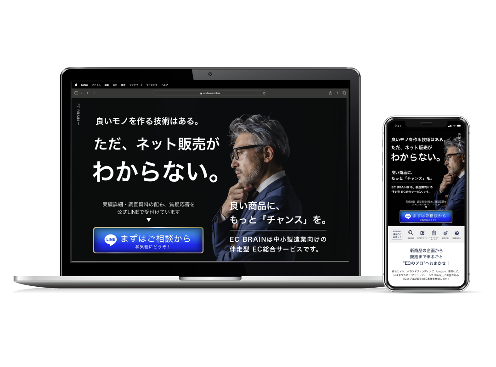
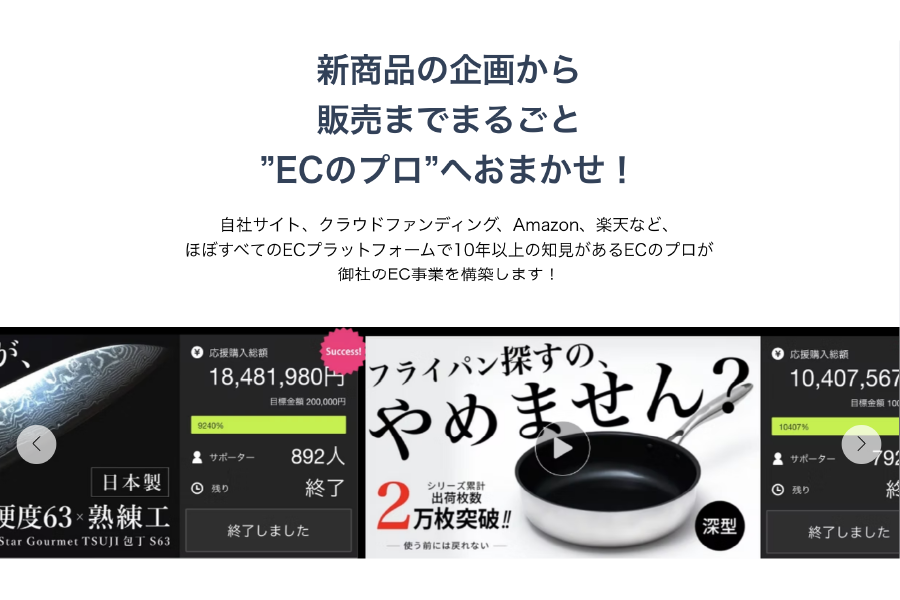
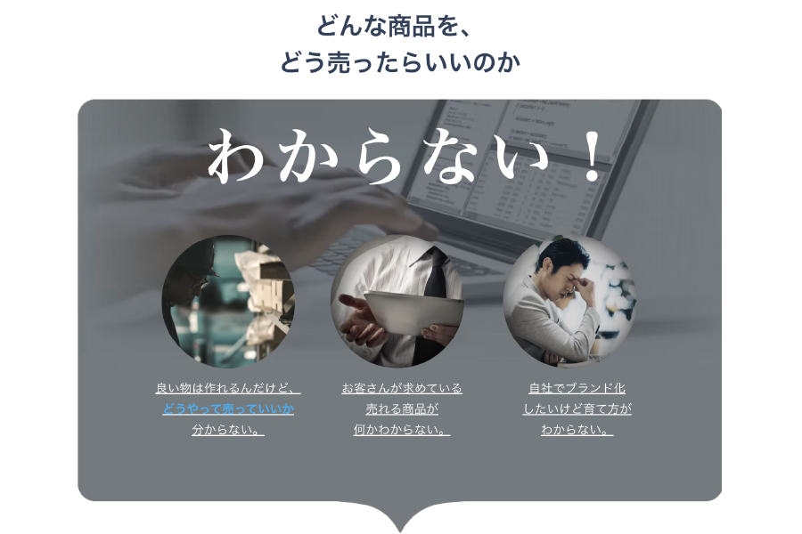
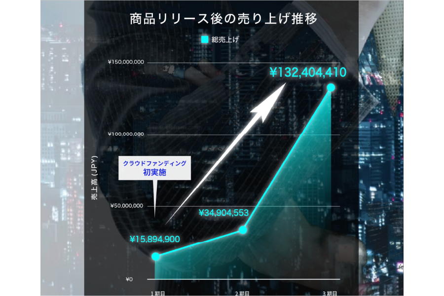

中小製造業向けECサポート事業（BtoB)｜WIXで制作

プロジェクト概要
BtoB集客に特化したEC支援LP × LINE × 広告最適化LPOでリード獲得を強化するプロジェクトです。
中小製造業のEC展開を支援する「EC BRAIN」のBtoB向けランディングページをWIXで制作。ターゲットである製造業の経営者・EC担当者が直感的にサービス内容を理解し、スムーズに問い合わせへ誘導できる設計を実施しました。
さらに、LINE公式アカウントの構築・広告運用・LPO（ランディングページ最適化）を組み合わせ、現在もリード獲得率を改善し続けています。
実施内容とポイント
1. ターゲット（中小製造業のEC担当者）の課題に特化したコンテンツ設計
「ECを始めたいが、何から手を付ければいいかわからない」「ECの売上が伸びない…どうすれば売れるのか？」「自社の強みを活かせる販売戦略を知りたい」このような悩みを抱える企業向けに、「EC運用の課題解決 × 成果に直結するサポート」という軸で構成しました。
2. BtoB向けの信頼感を高めるデザイン × LPO（ランディングページ最適化）
事例・実績をファーストビューで強調（信頼性の向上）、具体的な成果データを掲載し、安心感を醸成しました。またスマホ最適化 & CTA（問い合わせボタン）を複数配置し、CVR向上を実現しています。
3. WIXを活用した運用しやすいEC支援ページ
企業側で簡単に更新できる仕組みを提供しました。また、SEO対策を施し、自然検索からの流入を強化しています。
デザインギャラリー



制作コメント
このプロジェクトでは、EC運用に課題を抱える中小製造業向けに「LP × LINE × 広告 × LPO」を組み合わせたリード獲得施策を実施しました。
特に、LINEを活用したナーチャリング施策が効果的であり、問い合わせのハードルを下げることに成功しています。現在もSEO施策 × 広告最適化 × LP改善を継続的に実施中です。
製造業特有の課題やニーズを理解し、具体的な成果データを示すことで、BtoB向けの信頼感を醸成するランディングページとなっています。また、継続的な改善施策により、さらなるパフォーマンス向上を実現しています。